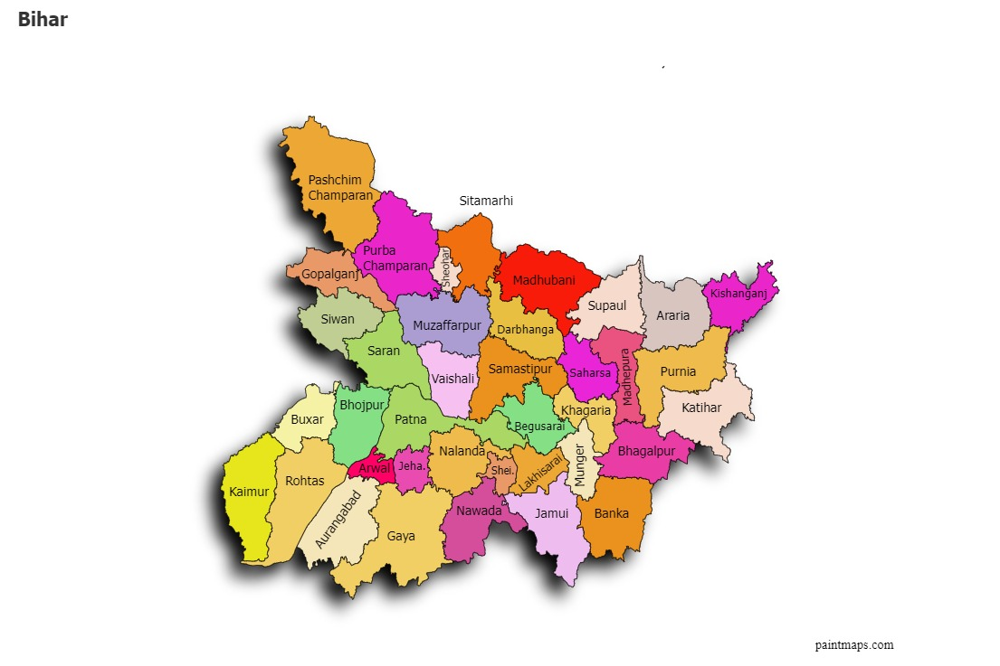

| Name: | Bihar |
|---|---|
| Capital: | Patna |
| Language: | Hindi, Maithili, Bhojpuri, Urdu, and others |
| Chief Minister: | Nitish Kumar |
| Total Districts: | 38 |
| Population: | ~104 million (as per 2011 census) |
| Formation: | 15 August 1947 |
| Area: | 94,163 km² (13th largest in India) |
| Borders: | Uttar Pradesh, Jharkhand, West Bengal, Nepal |
| Coastline: | None (Landlocked State) |
Know more